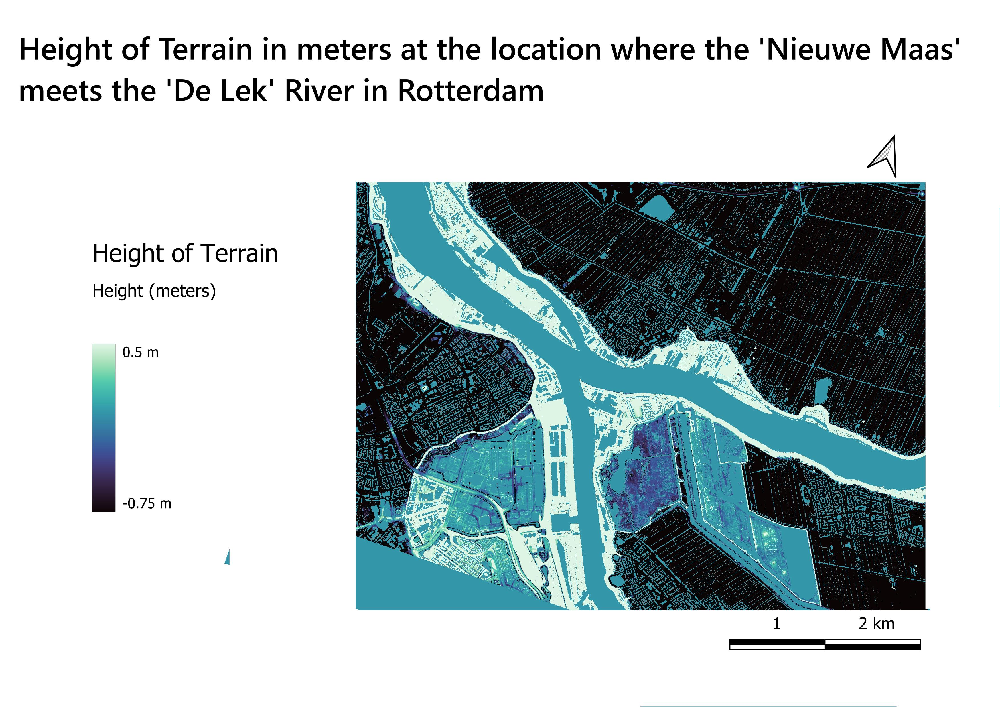
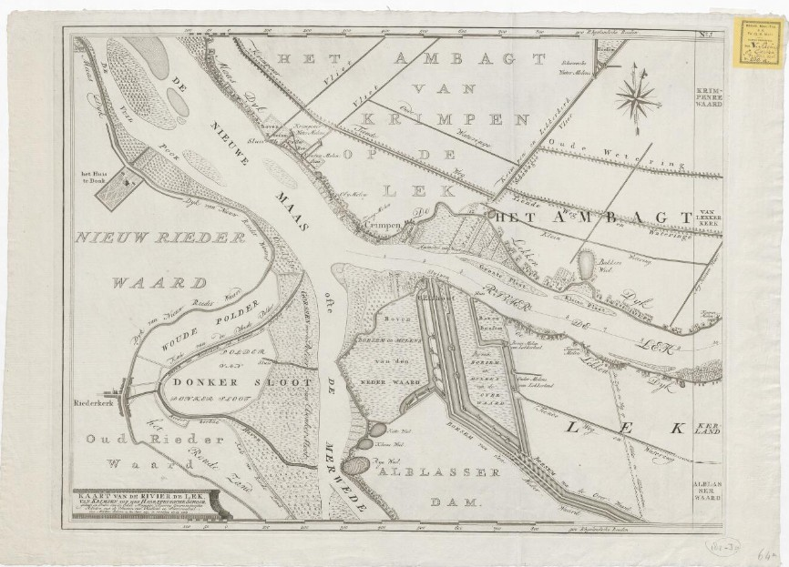

Digital Terrain Model
Old Map
This digital terrain model (DTM) shows the height of the terrain between the Nieuwe Maas and De Lek river in Rotterdam or in other words, how the surface would look like if all infrastructure and trees were removed.
For this lab project I compared an old map from 1764 to this newer map of the same region. To analyze this region I had to download the DTM files as GEOTIFF files and merge them and then change the colors and height gradient to make the river and dikes pop out. I then used the georeferencing tool to map the old map on top of the new map to analyze any differences I could find.
What I did find was that in the bottom left part of the map there used to be a small harbor and with the terrain model you can easily see the dike still exists just that it does not have water around it anymore. This map, and the comparison to the old map, highlights how the dutch have pushed the land further out which demonstrates the bigger picture which is that the dutch have a historical connection with water management.